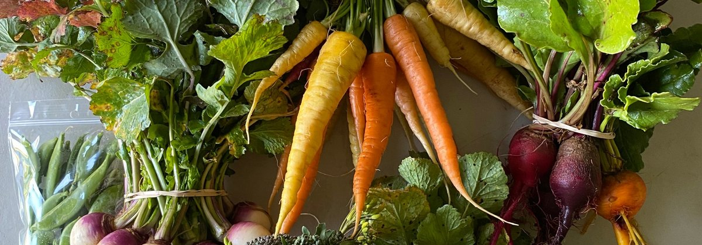
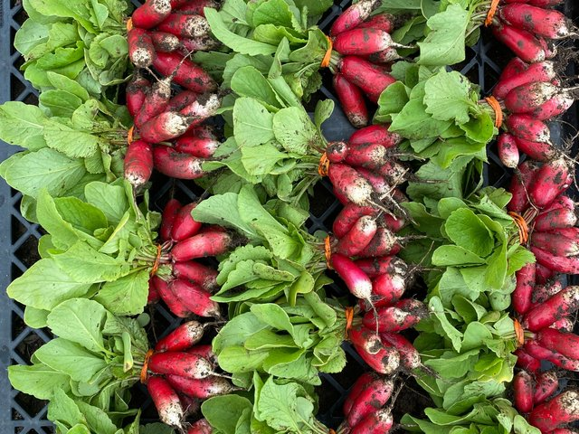

Welcome: What's in Season on Our Farm

Welcome to our seasonal food guide. We grow more than 50 different crops on our farm, and the best time to eat each one is when it is ripe and just picked. On this site you will find a harvest calendar that shows when each crop is ready, simple recipes that use what is in season, and tips for storing and preserving extra produce so nothing goes to waste.
In Season Now
Here is a quick look at a few crops coming out of our fields. The full list of crops is on the Harvest Calendar page.
| Crop | Harvest Months | Best Uses |
|---|---|---|
| Winter squash | September to December | Roasting, soups, and baking |
| Kale | October to March | Sauteing, salads, and smoothies |
| Carrots | October to February | Snacking, stews, and pickling |